Monday
Over the long weekend I decided to do a bit of shopping at Uniqlo in preparation for the pitch a friend event happening on Wednesday.
I dragged “The Quant” with me to go and get some of the items recommended by a friend of “The Fisherman”. I’ve leveled up since the last time I came to Uniqlo back in episode 25. Back then I wrote this about the experience
To say Uniqlo was overwhelming was an understatement. It really forced me to use every bit of willpower I had left.
Now I would only describe the experience as a mildly annoying waste of time. It didn’t feel like a hellscape so much as a paper cut scape. I walked away with some jeans, a shirt jacket kinda thing, and some shirts. Thanks to “The Fisherman” for joining via facetime to also give some opinions.
Later I went to Mission Run club featuring “The Raja of Rhythm”. My legs weren’t 100% but they managed to get through the run pretty reasonably. Originally I told everyone I was gonna go in the back of the pack and take it slow but someone requested I be her run buddy and I obliged which took closer to the front than I was anticipating. It still worked out though.
Tuesday
Today I went to work and then I went home and called my younger sister. We hadn’t talked in a month so it was great to catch up with her.
Wednesday
Originally the pitch a friend event that “The FIsherman” prepared was gonna happen today but it got canceled :(. After some time in the mines I went to MR with “The Quant” and “Sergeant Sassy”. Sadly the run was far from smooth sailing as my shins and knees really started acting up. “The Quant” could tell that I was hobbling despite my admittedly not best efforts to fool him. They were still efforts mind you just more half hearted ones.
After 2 miles I realized running just wasn’t it. I needed to preserve my strength for Marina Run Club for … reasons we will get to in that chapter. In order to win the war I throw the battle and walk the last bit. Along the way though I meet a girl from Toronto who claims Toronto chinese food is better than SF Chinese food. I’m a bit skeptical of this as she is a Canadian I only just met so I ask a group chat with the true Canadians (“The Mosher,” “That’s nuts,” “The Philosopher,” “The Juggler,” “The Best” amongst others). They certainly don’t defend the claim as vehemently as she does so I’m a bit less than convinced.
Thursday
After work I go to an alumni event for the company I was working at from May 2021 - March 2025 Snorkel AI.
It was great catching up with everyone again and seeing the majority alumni along with the smattering few of people actually working there. Amusingly enough one person said he almost didn’t recognize me without my trusty unicorn hat.
I was reminded of some of my antics like when I would eat mayo with every meal (which was delicious!!). Back in those days I ate mayo with everything from ice cream to thai fried rice and I loved every bite of it. Though that was probably at least part of why I was fatter back in those days but man was it good.
Once you leave Snorkel you have 2 years left to exercise your shares. When I asked people currently working there if I should I was met with a resounding awkward silence. Not all bets can pay off I suppose.
Originally I wanted to split my time between this and a Yelp elite event before going to bar night but I figured quality beats quantity so I caught up with a bunch more alumni instead which was a lot of fun!
From there I went to bar night with “The Philosopher,” “That’s nuts,” “The Mosher,” “The Best” and some other folks who don't have newsletter nicknames. Originally there was someone I met at the regular’s party last Sunday who I tried persuading to come today by promising to give a gold star. They didn’t come but they wound up being used to persuade “The Best” to come through
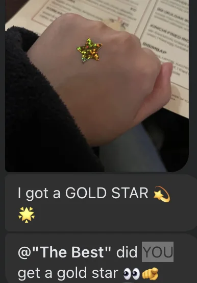
I think I’ll start telling people if they do things I’ll give them a gold star and then actually give them one :D
Friday
“The Fisherman” is looking for a website to advertise her upcoming crabbing and foraging lessons. It was a tough market but in the end she went with an offshore team. Specifically off the shores of SF. And the team is one Paki who knows how to vibecode with Claude. And unrelated the team member is a guy who was once recognized at a party for scarfing down a burrito on the 33 bus.
After work the team starts to work on the first version of the website and send it to “The Fisherman” for review.
A couple days ago I got an invite from “La Tacqueria Royalty” to come to an event
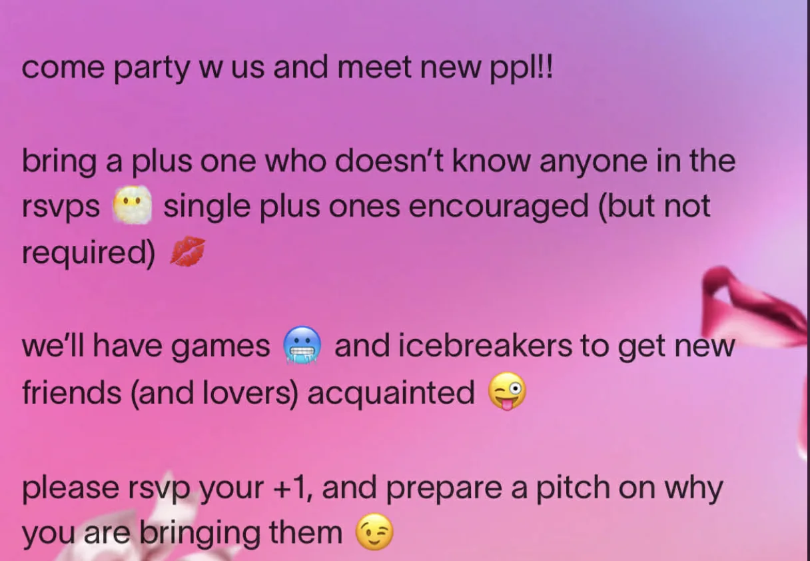
Originally I thought this was a game night of a sort. Clearly I didn’t read this message thoroughly enough. I also didn’t read this follow up message
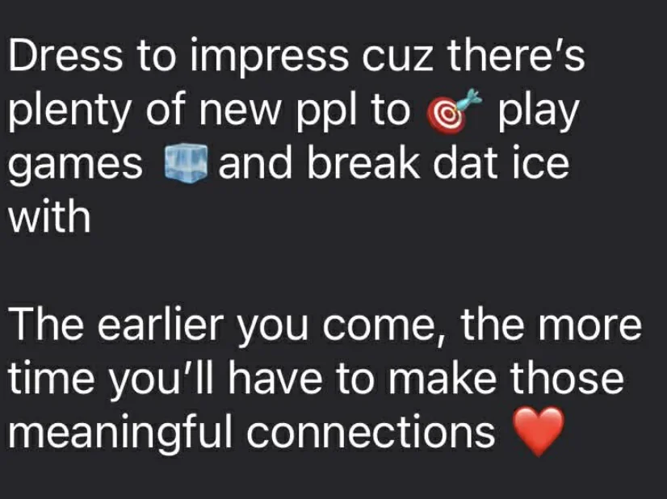
Before the event starts I get dinner with “La Tacqueria Royalty”, and two other folks that don’t have newsletter nicknames. I see them all dressed to impress while I was dressed in my standard Mooni hoodie and jeans (not the new ones I bought from Uniqlo mind you).
When I realized this was meant to be a dating event I shuddered that I’m already neglecting the fashion advice I got from my council :( .
Nevertheless I’m still down to go if for no other reason than to practice the first impression advice I got. Huge props to “La Taqueria Royalty” for offering to wing man me :D.
When we get to the event it turns out to be quite crowded with a wide variety of folks from all walks of life (though mostly Google, Berkeley, and UCLA because SF I guess). I talk with a wide variety of folks including a guy who got inspired to volunteer at Red Cross after meeting with a Red Cross volunteer at 4AM at Market St, some other people into social deduction games including Blood on the Clock Tower (or BoTC as it's apparently called). To help break the ice there is a bingo sheet to get you to meet people that fulfill different conditions including “Went to Berkeley," “Works at a Startup”, along with different things like “Compliment a stranger” and so on. This works well enough to start with and I get Bingo reasonably quickly. It turns out there is another square on the Bingo called “Meet someone you matched on Hinge with”. I thought surely that wouldn’t apply to me until it did. Out of the corner of my eye I saw a girl and did a double take. It was in fact someone I matched on Hinge with. Hold on could it really be <her> could it?! I pulled up Hinge and went through my matches and confirmed it was in fact her.
What do I do now? Well I asked myself what would make for a more entertaining newsletter and the answer was clear. We talk to her team. We wound up talking for about 10 minutes during which I not only employed all the advice I got from “The Fisherman” and “The Philosopher” but even some advice I got from “The Quant”. One thing he observed from the Costco dating event I went to is that sometimes when meeting people in these situations I tend to rapid fire ask questions without giving the conversation a chance to breathe. I’m pretty sure the reason I do this is because I’m worried if there is an awkward silence the person I’m talking to may try to leave. But this time I notice the pauses and let them breathe a bit. It was fun talking to her, she likes games, walks, is a bit nerdy and overall seems like a fun person. I suspect she may be a bit introverted but ya gotta go for it.
Surprisingly she asks me for my number and then I ask about meeting up.
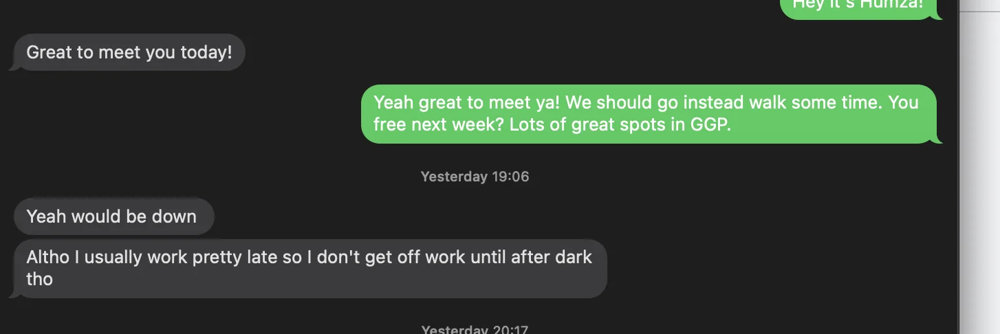
Considering that some of my other text asks haven’t gone anywhere, this is progress. I know I probably should have asked in person but I think she needed to leave the event and I figured we had a good rapport so I may as well.
Slightly later in the event the bar really starts to fill up and I start getting nervous. And then one guy comes down the stairs and stumbles onto me causing me to fall down a bit. At this point I was mildly worried about a crowd crush scenario if I then tripped onto somebody else.
I have flashbacks of when I went to Westwood a month ago and got overwhelmed by the crowd. I thought to myself “Yeah I really hate crowds”. “Yeah I may as well leave”. But then I remembered that I need to push past my limits if I want to improve. I don’t want to let this thing beat me. I can’t improve if I just stay where I am right now. So I take a deep breath and decide to stay. This winds up being the right call as I talk with many more people including the BoTC people at this time.
Periodically I tried to enter some groups to talk with a few select people but they weren’t really open to outsiders. One tip I got from a book that “The Philosopher” recommended was to look at the way people's feet point. If it looks like someone (either in a 1:1 or group conversation) has their feet pointed somewhat outwards it means they are open to outsiders joining the conversation. If not it means they aren’t. This can be a good visual tell before approaching.
Towards the end of the night I try to talk to one more girl. This really cute really tall girl. I’m with her and a bunch of people in a group and she asks what we like to drink. I respond with the truth that I don’t drink and she looks at me like I’m some kind of idiot. I don’t really know what to make of this and in retrospect this probably should have been my first cue that she wasn’t interested but don’t worry things go from bad to slightly worse. Not a lot worse mind you, but slightly. Later I notice her by herself having a drink so I go up to her and ask her what she’s drinking. She says water and I respond “Ooh the drink of champions”. She says “Yeah ….” and then she just walks away from me. I was kinda put off by that so I decided that's my cue to leave the event and go home.
Saturday
I start off with Marina run club with “Top of the Rope”. While my shins were still splinting it was critical that I preserve my strength so I can come to this run club. Not because I really liked the run but because there was this one really cute girl I wanted to get to know better. I started talking with her for all of 2 minutes before the run started and she put her airpods in which made it pretty clear she wasn’t interested in talking during the run.
The run itself was quite nice. Normally I would have rather gone to the top of Tank Hill as is my tradition but this run was a close 2nd
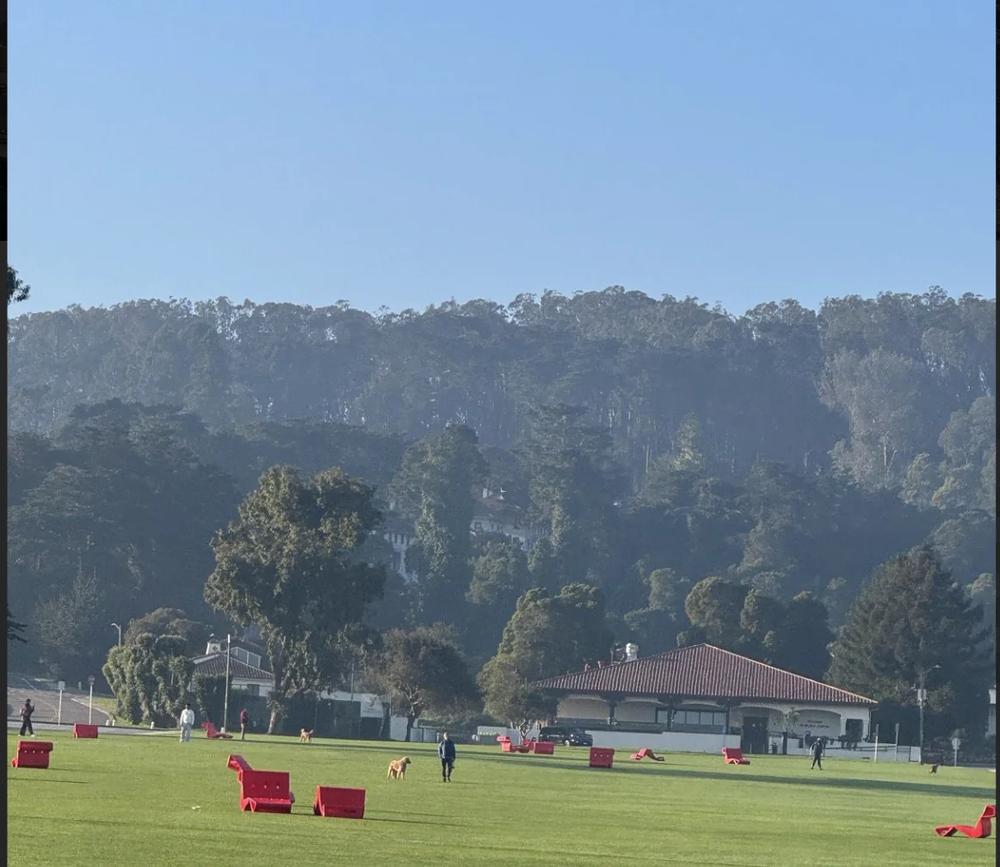
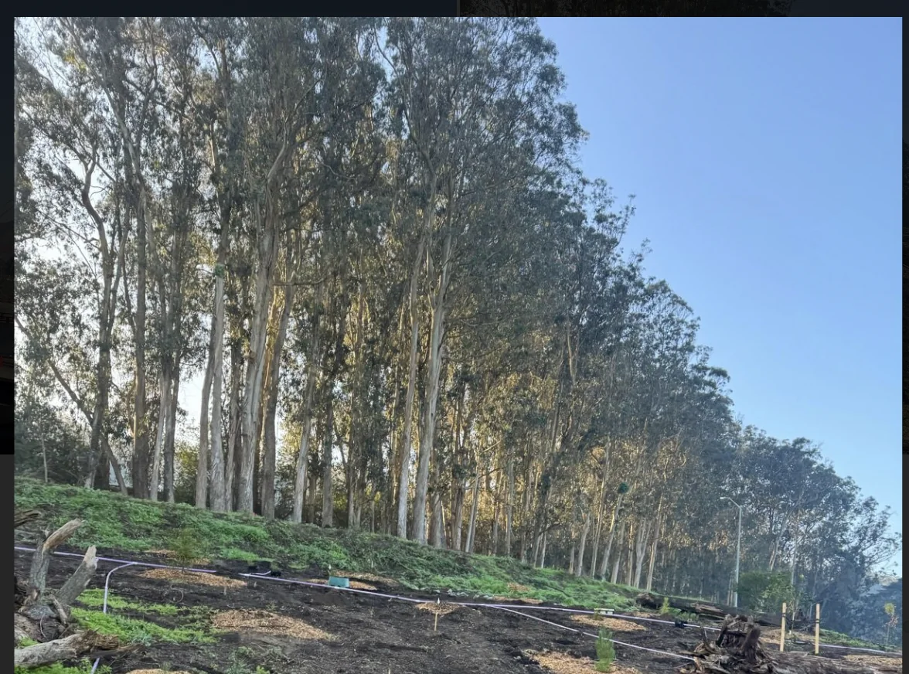
During the run me and “Top of the Rope” meet this guy who is trying to build a social media app centered around posting videos of yourself doing things and the only way to see what other people post is to post something yourself. He mentioned that 90% of traffic on a social media app are lurkers and this can be a way to mitigate that. He wants social media as it's more originally intended (i.e. folks engaging with others in their own local communities) without grandiose things like Br. Meast or the like.
After the run we went to trash pickup along with “The Notetaker,” “The Ravenkeeper,” “The Writer” and others. I skipped out on the usual post trash brunch in order to save room for KBBQ coming up later tonight.
I then go with “Top of the Rope” to a party celebrating Wikipedia’s 25th birthday. It was over in the SF public library and it was pretty interesting. They had presentations about different topics such as what it's like to be a Wikipedia editor, how to contribute to Wikimedia commons, and they had a place where you could get the Wikipedia logo printed onto things like shirts, bags, and the like. I met one of her friends who is very similar to me in that we both despise the South bay and have minimal furniture although surprisingly I think this guy has even less furniture than I do :O.
They had nametags and I decided to be a bit cheeky with mine
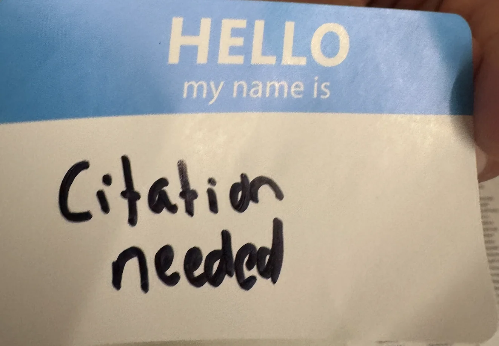
Occasionally when I introduced myself I would say that I’m Cite for short and a surprising number of people believed me. I guess this goes back to some other feedback I got that the first 15 minutes of a conversation are intended to be purely factual. Granted I knowingly broke the rule here but it’s interesting to observe.
I got to do a coloring sheet which made me feel like a kid in the best way possible
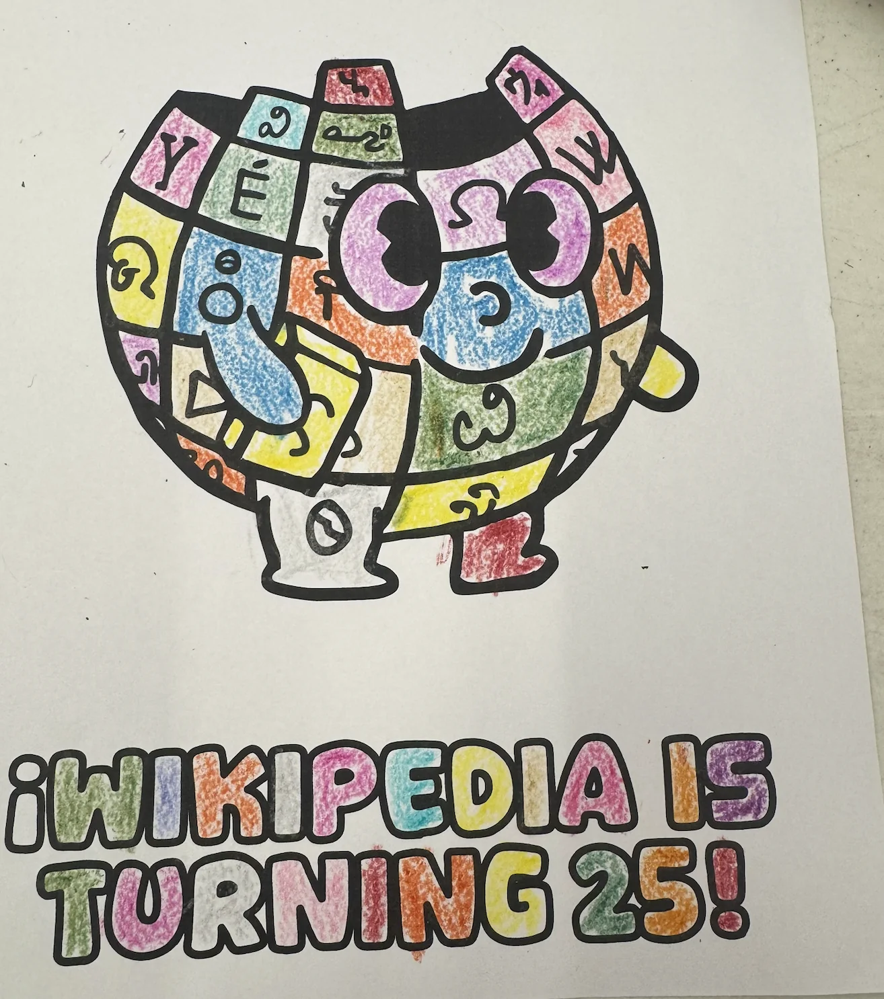
One of the presentations was a game where we had to guess which Wikipedia article had more characters than the other in a 1 v 1 format. Let’s play the game here! I’ll give you two Wikipedia articles and you guess which one is longer. I’ll reveal the answers at the end. Note that length is defined as the character count in each article.
San Francisco Fog vs Lombard Street
List of Hills in San Francisco vs Mission Burrito
Emperor Norton vs Charles M. Schultz
Sourdough vs Dungeness Crab
At the event I ran into one of “The Ravenkeeper’s” friends (Nitu) who introduced me to some of her friends who wound up being really cool. I wound up making a really good first impression on her as she said “You should work in consulting. You have a way with words. You say everything in a packaged up way.” For context she works in consulting herself so I guess some of the tricks I’ve learned have been working. She was also really cool and I love how both her and Nitu are down for really random events like this. I definitely need to invite them to stuff as they seem really fun!
I then go home and the off shore website development team gets to work and iterates on the website based on the feedback “The Fisherman” sent and delivers a second version.
From there I go to Kogi Gogi for the big KBBQ event. This is the largest group I ever brought to Kogi Gogi with me, “The Quant,” “The Fisherman,” “The Philosopher,” “The Writer,” “The Mosher,” “That’s nuts,” “Not a matcha bitch,” “Top of the rope,” “The Pasta Prince,” another friend who doesn’t have a newsletter nickname, “The notetaker,” and even “The Shadow Brigade”.
I wasn’t sure how best to mention this but the whole reason I had this event was to celebrate the fact that a startup I was at previously got acquired and I wanted to treat my friends. It was a great time and I’m really glad everyone could come!
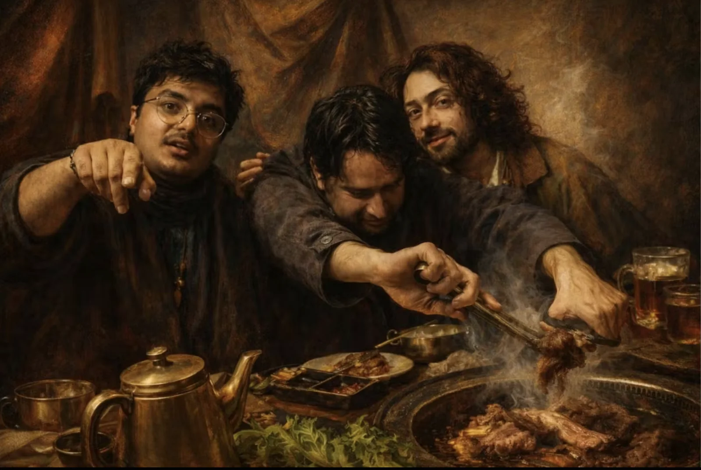
Sadly I can’t put the above pic on Hinge but man does it slap.
Afterwards we went to Hometown creamery and got ice cream. The cranberry and orange sorbet was surprisingly good!
As great a time as it was I feel bad I could only treat a few of my friends. I’m gonna be reaching out to y’all either 1:1 or in different groups if y’all couldn’t make it. If you don’t hear from me within a week want a dinner courtesy of the first national bank of Humza please reach out and let’s get something on the books. If you 're reading this newsletter it means you’re a friend I want to treat as a celebration!
Sunday
The day begins with trash pickup with “The Notetaker” and for the first time in a minute “The Yogi”! It was great hearing about all her travels from Tahoe, Chile, Argentina, Dallas, and Toronto!
After pickup I went to Crissy Beach to play Spikeball hosted by “The Menace” which I dragged “The Quant” to. I didn’t know he and his group of friends were so into the game! One of them keeps track of every game he has played since high school and has a website with everyone’s ELO based on all the games played.
I generally consider myself an average spikeball player but these people were all mostly quite above me :( :( . Sadly my old Tuesday evening training was not serving me as well as I thought. I ingested some copium and told myself its because of the wind and the sand since I usually play in a park rather than a beach but facts are facts and ELOs are ELOs.
After this event for the first time in a while I felt tired. “The Quant” even noticed I basically checked out of one of the last conversations I had at the event and gave an out for us to head out. Originally I was planning on inviting “The Taco” over for lamb pasta but I had to cancel because I was low on energy which sucks. I hate canceling things but with my headache and brain feeling fried I felt out of it. I need a way to get more energy so if any of y’all have suggestions that would very much be appreciated. This can’t happen again :( I can’t remember the last time I chose to chill at home instead of doing something social. I really hate cancelling and feel pretty bad about it (worse than pretty much any bad first impression I made except for one in particular I won't be getting into in this newsletter which did come with some consequences for me).
I finally go=]]]]]]]]]]]]]]]]]]]]]]]]]]=]\===]\===]\===]\==]====]====]==]==]==]==]==]==]==========]=]=]=]=]=====]=]=]======================================================================================================================================================================================================================================================================================================================================================================================================================================================== around to writing the newsletter after way too much lazing around.
Wikipedia Answers
Round 1 Winner
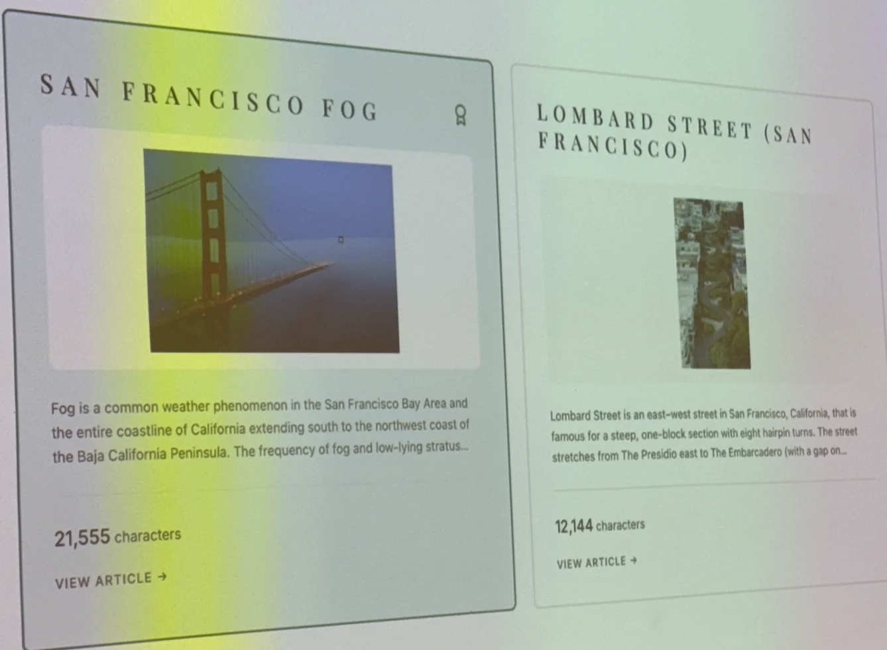
Round 2 Winner
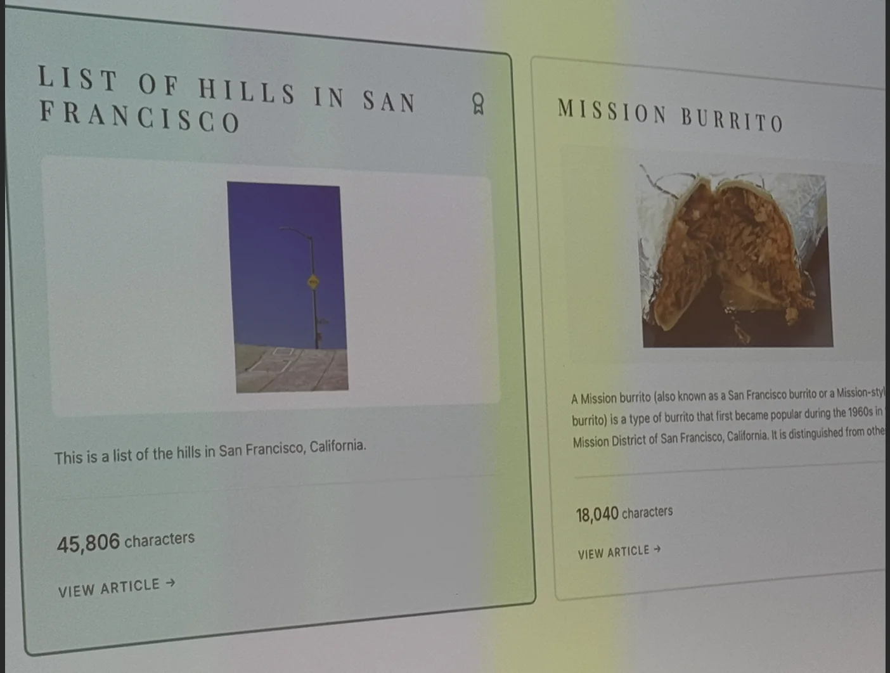
Round 3 Winner
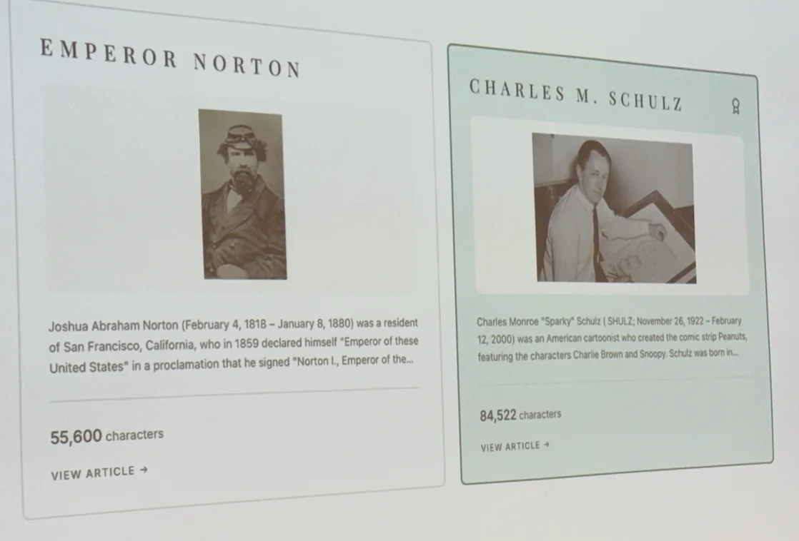
Round 4 Winner
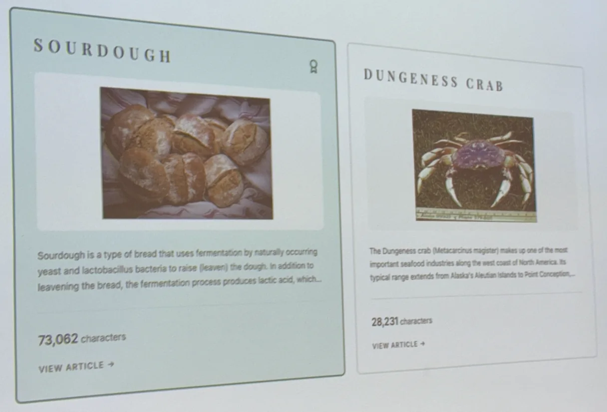